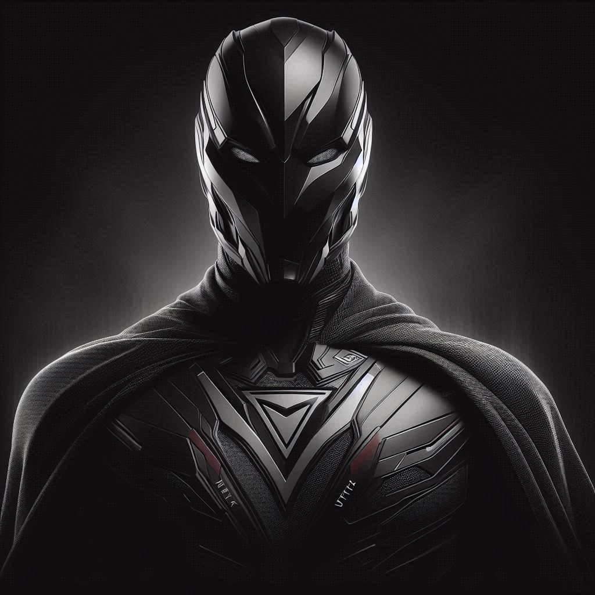

Sombra Vértice
Elías Corvalán no buscaba ser un héroe. Solo quería construir una ciudad mejor, un lugar donde la gente pudiera vivir sin miedo.
Pero cuando descubrió el poder escondido bajo Noctária, entendió que no bastaba con diseñar edificios. Así nació Sombra Vértice:
inteligente, reservado y siempre un paso adelante. No habla mucho, pero observa todo. No busca fama, solo equilibrio.
Se mueve entre lo visible y lo oculto, como una figura que aparece justo cuando más se le necesita.

En la ciudad de Noctária, donde la luz apenas roza los rascacielos y la corrupción se arrastra como una neblina espesa, un joven arquitecto llamado Elías Corvalán vivía entre planos y estructuras que soñaban con cambiar la ciudad. Pero sus ideas de diseño urbano, pensadas para mejorar la seguridad y el bienestar de los habitantes, eran ignoradas por los altos mandos que se lucraban del caos.
Una noche, mientras inspeccionaba una obra clandestina, Elías cayó por accidente en una grieta subterránea desconocida, producto de una excavación ilegal. Allí encontró una cámara oculta que contenía restos de una antigua civilización que utilizaba geometría sagrada como fuente de poder. Al tocar un extraño artefacto en forma de poliedro suspendido en el aire, una energía oscura y brillante al mismo tiempo se fusionó con su cuerpo.
Despertó horas después, diferente. Podía doblar el espacio a voluntad, crear esquinas donde no las había, desaparecer entre los ángulos de la realidad y moverse por la ciudad como una sombra con forma definida. Así nació Sombra Vértice, el guardián invisible de Noctária.
Desde entonces, con una capa compuesta de fibras arquitectónicas inteligentes y un visor que le permite leer las tensiones estructurales del entorno, Sombra Vértice comenzó a combatir a quienes deformaban la ciudad para su beneficio. Desde mafias urbanas hasta políticos corruptos, nadie está a salvo de su justicia geométrica.
Poderes
Pliegue Dimensional
Puede doblar el espacio para moverse entre sombras, atravesar paredes o aparecer en otro lugar instantáneamente.
Aristas de Sombra
Crea armas y trampas con sombras sólidas de forma geométrica, como cuchillas o jaulas oscuras.
Visión Fractal
Detecta patrones invisibles en estructuras y personas, revelando debilidades, rutas ocultas o mentiras.